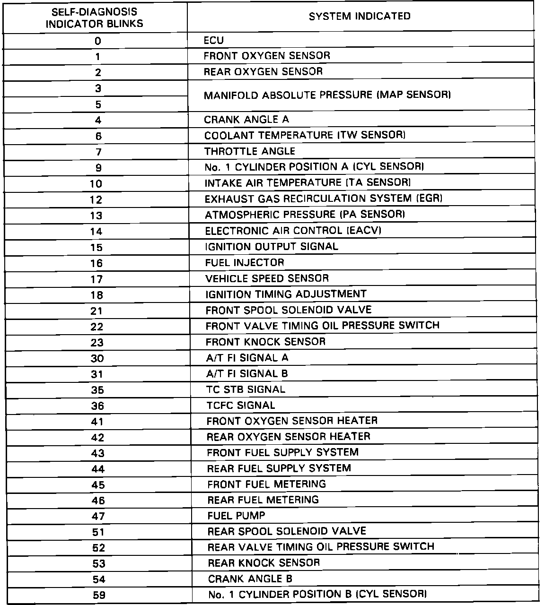

Operation CHARM
: Car repair manuals for everyone.
Home
>>
Acura
>>
1991
>>
NSX V6-3.0L DOHC
>>
Repair and Diagnosis
>>
A L L Diagnostic Trouble Codes ( DTC )
>>
Testing and Inspection
>>
DTC List - Fuel and Emissions
DTC List - Fuel and Emissions
Failure Codes:

FAILURE CODE INDEX